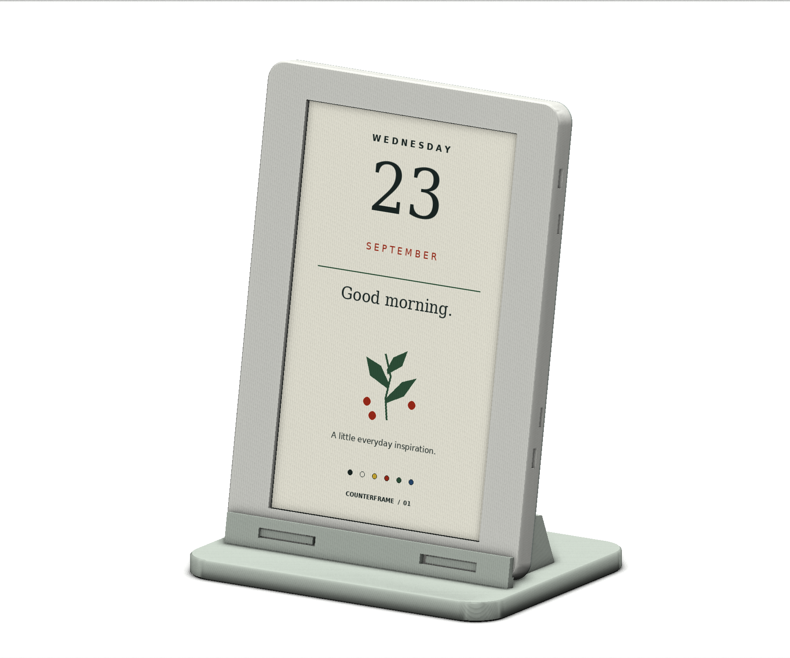
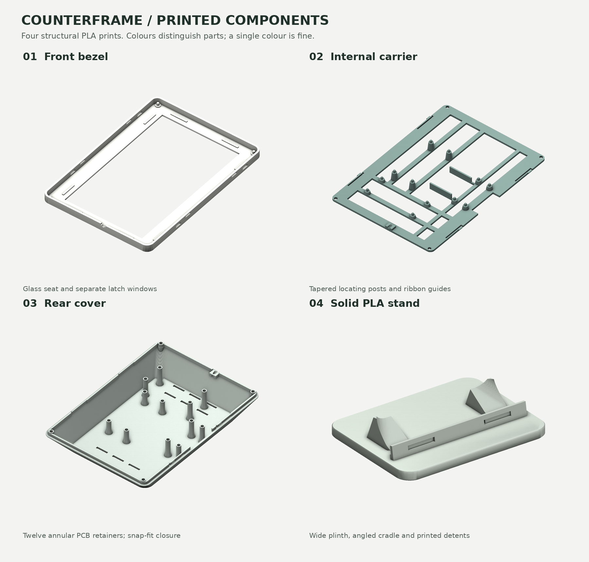
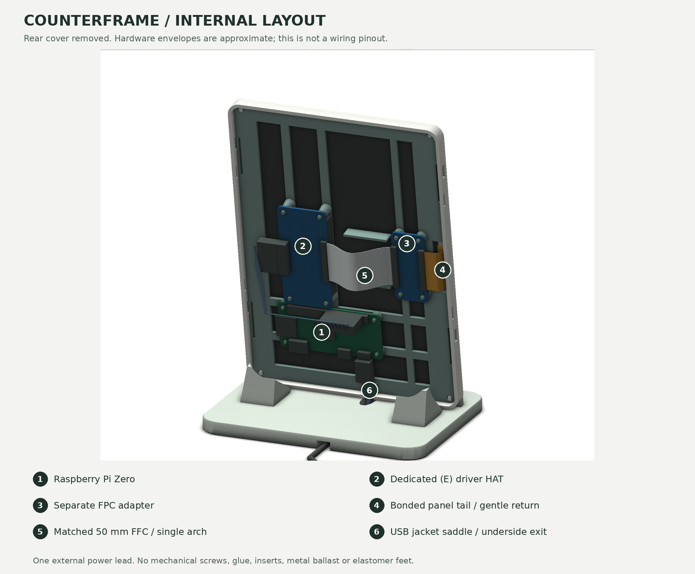
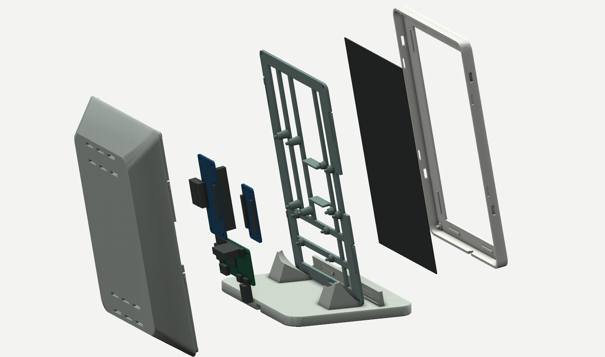
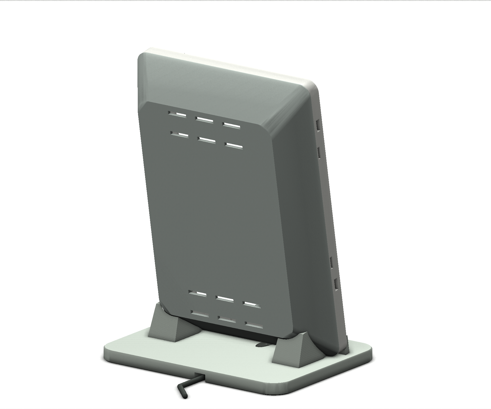
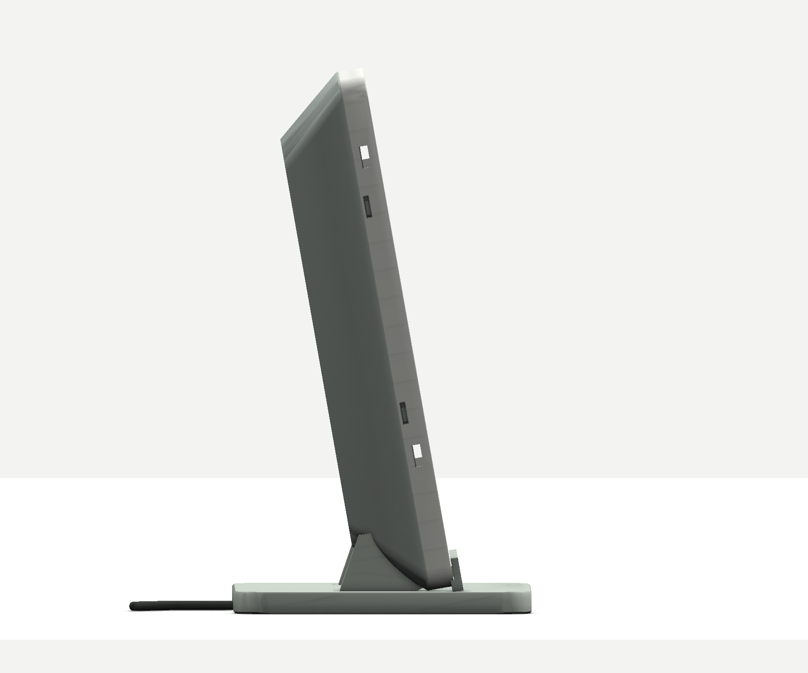

A quiet place for a changing screen.
Portrait countertop enclosure for the Pi Zero and Waveshare Spectra 6 (E).
4 structural PLA parts0 screws142 × 108 × 195 mm assembledEngineering prototype; an assembled device is shown in the project README, but detailed fit qualification remains outstanding. Confirm the exact (E) hardware, a matched 50 mm FFC and the slim USB plug before the full print.






Counterframe / 7.3 E6
Portrait countertop enclosure · four structural PLA prints · no screws
Version 1.0 engineering prototype, 23 September 2026. Designed in OpenSCAD and exported to individual manufacturing STLs. The render images are produced from the same geometry, not concept illustrations of a different object.
Detailed physical fit qualification remains outstanding. Published board outlines and mounting-hole positions have been checked; component heights, cable dimensions, bend suitability, print tolerances and real countertop stability still require first-article verification. Read the compatibility table before printing. Do not force the display or its bonded flex to fit.
Design at a glance
The front is a softly rounded picture frame, with a 9 mm-deep perimeter and a rear housing that tapers to a smaller back face. The maximum enclosure depth is 34 mm. A separate low plinth holds the screen 10 degrees back from vertical. Boards are mounted beside one another rather than stacking the HAT on the Pi.
| Item | Nominal CAD dimension |
|---|---|
| Front body | 134 × 188 mm |
| Maximum body thickness | 34 mm |
| Visible straight perimeter depth | 9 mm |
| Stand footprint | 142 × 108 mm |
| Main plinth thickness | 8 mm |
| Assembled height | Approximately 195 mm |
| Display opening | 96.8 × 160.8 mm, portrait |
| Image area | 96 × 160 mm, portrait |
| Shell wall / front face | 2.2 / 1.8 mm |
| Backward inclination | 10° |
The bezel centres the visible image, not the raw glass outline. The glass is offset by 2.9 mm relative to the image centre because the original panel's inactive borders are unequal. The wider side border also makes room for the bonded flex to return behind the display.
Files
counterframe.scad: editable master model; no external CAD library required.stl/front.stl,carrier.stl,rear.stl,stand.stl: print one of each.stl/release_key.stl: optional small PLA tool for pressing the release tabs.stl/coupon_pins.stl,coupon_holes.stl: peg-fit samples.stl/coupon_latch.stl,coupon_socket.stl: small snap-fit practice pieces.renders/: assembled, rear, side, internal, exploded and individual-part views.BUILD_GUIDE.html: illustrated offline guide; open in a browser.validation.json: mesh and nominal geometry check results, with their limitations.export.sh: reproduces the manufacturing STLs with the OpenSCAD CLI.render.pyandchecks/export_render_meshes.py: optional renderer; requires Python, VTK, NumPy and Pillow in addition to OpenSCAD.reference/contains non-printing, approximate electronics and cable envelopes used by it.
All manufacturing STLs are in millimetres, already oriented for printing. Do not merge them into a single print, scale them to fit a bed, or print the electronics reference meshes. The assembly and exploded selectors are for inspection, not a single printable object.
Hardware compatibility: verify these first
This is specifically based on Waveshare 7.3inch e-Paper HAT (E), E Ink Spectra 6, with its separate small FPC adapter and dedicated blue driver HAT. It is not a claimed fit for the seven-colour (F), the four-colour (G), a generic e-Paper driver board, or a PhotoPainter board. [S1–S4]
| Hardware | Published outline / holes used | What still needs measuring |
|---|---|---|
| Display glass | 170.2 × 111.2 mm; active 160 × 96; model thickness 0.91 mm | Actual thickness, back-side features and allowable flex-bending region |
| Dedicated (E) HAT | 65 × 30.5 mm; 58 × 23 hole pitch; Ø3 mm holes | Underside header and top-side connector/switch heights |
| Small adapter | 45 × 21 mm; 38 × 14 hole pitch; Ø3 mm holes | Socket orientation, housing heights and any underside parts |
| Raspberry Pi Zero | 65 × 30 mm; 58 × 23 hole pitch; Ø2.75 mm holes | Your board revision, populated components and GPIO connector boots |
The Pi mounting pattern is taken from the official Pi Zero drawing. The component keep-out is a conservative approximation, not a manufacturer STEP model. A Zero 2 W may share the mounting outline, but this package does not certify every component of every Zero-family revision. Check your actual unit. [S5]
Specific cable and connector assumptions
- One slim, straight micro-USB plug into the Pi's PWR IN port. The modelled moulded body is 9.6 mm wide × 14 mm long × 5.6 mm thick; the cable jacket is Ø3.4 mm. A bulky boot, ferrite bead or right-angle connector is not an assumed fit. This does not add a USB-C panel socket or a USB extension inside the case.
- 50 mm overall-length, 50-way FFC between the adapter and HAT, with the correct pitch and contact-side arrangement for the kit. The modelled path is 50 mm including the seated ends. This is a short interconnect, not an attempt to fold a long kit cable into the case. The actual supplied cable length has not been established; obtain a matching short replacement when necessary. Measure yours; do not stretch a shorter cable to this route or compress a longer one into a tight crease. Preserve the manufacturer's contact orientation.
- An eight-wire SPI/power lead connects the remote HAT to the Pi GPIO. The model permits female jumper housings extending 14 mm above the Pi header plastic. Follow the Waveshare pinout; the simplified wire colours and positions in the render are not a wiring diagram. No second external power supply is designed into the enclosure.
- The short bonded panel tail is taken as 24 mm long × 25.5 mm wide from the drawing. Its modelled return has a 4.5 mm bend radius. The separate 50 mm FFC follows one smooth arch with approximately 6.7 mm minimum modelled radius. These are design assumptions, not manufacturer-approved minimum bend radii. Reject the route if it would bend a stiffener, IC, bonded transition, or unsuitable portion of the actual tail. [S2, S6]
How the retention works
Front bezel and glass
The glass rests on its inactive front border inside broad lateral guides. It is captured between the bezel and the skeletal carrier with 0.15 mm nominal axial clearance and 0.30 mm clearance per side. There is no intended spring preload, press fit, conical peg contact or adhesive on the glass. The carrier must click home without squeezing or bowing it. The nominal backside air gap also separates the carrier crossbars from the glass.
Internal carrier and boards
The carrier locates on four tapered bezel pins and locks into four side windows with long, in-plane flexure tabs. Each PCB sits on four tapered-tip locating posts. Their parallel locating portions are Ø2.50 mm for the Pi and Ø2.70 mm for the HAT and adapter. The taper is a lead-in, not a wedge driven into the PCB hole.
The rear cover has twelve integral annular retaining collars aligned with those posts. When the lid is fitted, these capture the mounting-hole lands from above with 0.15 mm nominal clearance. Central bores in the collars clear the peg tips. This separates lateral location from axial retention and avoids relying on friction in a PCB hole. The rear cover has separate hard stops over the four carrier fixings, relieved for the front locator tips.
The boards are intentionally not retained against lifting while the cover is removed. Assemble and service with the frame lying face-down, not standing vertically with loose boards hanging on pegs.
Rear cover and stand
Four independent rear-cover snap tabs engage their own side windows. The front and carrier clips use different positions, so servicing the lid does not require releasing the glass carrier.
The stand has a fitted angled cradle, two rear buttresses and two detent leaves that engage recesses below the image. It is a separate part so its mass can be concentrated low down. Print it solid PLA: no metal ballast or rubber feet are required by the design.
PLA feet are not a substitute for rubber grip. The wide base is intended to resist tipping during modest movement, but the actual unit may slide on a polished or wet counter. This design has not been bump-, pull- or drop-tested. Lift it by the base rather than by the display bezel.
Cable routing
Viewed from the open rear, the Pi is at the bottom, the driver HAT is above it on the left, and the small adapter is on the right.
- The display's short bonded flex exits the right side in this rear view, rounds back inside the side pocket and enters the adapter's outer socket. Seen from the front, this is the display's left edge.
- The white 50 mm FFC follows a single broad arch between the adapter and HAT. Its centreline travels monotonically from one socket to the other, so it has no crossing folds. It bends through its thickness, without an edgewise fold or twist. The carrier has fences beside this lane and the lid's retaining columns are outside the modelled route.
- SPI wires run left from the Pi below the lower HAT mounting posts, then up the left-hand side into the HAT's eight-pin connector. Do not pull them diagonally across the lid's collar positions.
- USB power enters the Pi directly, follows a shaped jacket saddle at the lower edge, and sweeps rearwards through the stand's open underside channel. The nominal jacket path uses 8 mm-radius bends. Only this flexible jacket is lightly captured; the plug and PCB connector must not carry a cable tug.
The saddle follows the curved USB path and is split between the carrier and lid. A plug does not have to be pushed through a tiny printed hole. Its default groove is 0.10 mm smaller than the measured jacket diameter; set cable_grip=0 initially when the jacket's compressibility is unknown. Use the same setting to regenerate both carrier and rear cover. Check that the jacket is held without flattening, cutting or levering the plug.
The cable guidance is not an industrial strain-relief rating. Leave slack behind the stand so a moved appliance or pulled lead does not load the micro-USB connector or topple the frame.
Printing
Suggested starting point for a calibrated 0.4 mm-nozzle FDM printer:
| Part | Orientation in supplied STL | Starting settings / supports |
|---|---|---|
| Front | Visible face on bed | 0.16–0.20 mm layers, 4 perimeters, 5 top/bottom layers; no supports intended |
| Carrier | Flat grid on bed, posts upward | 0.16 mm layers, 4 perimeters, 100% infill; no supports intended |
| Rear | Outside back face on bed, collars upward | 0.16–0.20 mm layers, 4 perimeters, 5 top/bottom layers; no supports intended |
| Stand | Plinth on bed | 0.16–0.20 mm layers, 4 perimeters, 100% infill; local PLA supports beneath the front detent leaves/tips |
| Coupons / key | As supplied | Same filament and fit-critical settings as the final parts |
These settings have not been sliced for your printer. Inspect the layer preview, especially the stand's free-ended detent leaves, cable-channel bridges and latch tips. Use local support painting rather than filling every cavity with support. Clear all support from the cable passage before inserting a cable.
A 200 × 200 mm usable bed accommodates the largest 134 × 188 mm part, with a modest brim if the printer's actual usable area permits it. A 220 × 220 mm bed provides more margin. Do not scale parts to fit a smaller bed. Use filament-specific temperature settings and a clean bed; keep seams, first-layer bulges and support scars away from glass seats and mating faces.
Use ordinary unfilled PLA for the first article. Print coupons in the same spool and orientation. A decorative filament's snap behaviour can differ; no blend is certified here. Prusa notes PLA's relatively brittle behaviour and low temperature resistance. [S7]
Calibration before the full build
The pin coupon has five nominal diameters, left to right along increasing X: 2.40, 2.50, 2.60, 2.70, 2.80 mm. Its companion has three Ø2.75 and two Ø3.00 holes. Printed holes only indicate your printing process; they do not replace checking a real PCB hole. Gently test a suitable individual peg with the actual PCB, supporting it at the hole. A board should lower onto its posts without being forced or flexed.
For the latch coupon, place the male part on the socket's open floor with the long leaf next to its rear wall and press down until the small head enters the window. The male underside ends 1 mm above the socket's print-bed plane. Release by pushing the head inward through the window. This tests a similar in-plane PLA leaf, not the entire case or stand interface. Reject cracked, whitened or permanently distorted samples.
Dry-fit the four full-size printed parts without electronics before assembling the glass. All clips should engage with modest, local finger pressure. Do not compensate for a tight print by pushing harder through the screen. Correct dimensions or printing settings and reprint.
Assembly order
- Bench-test the Pi and display. Install the microSD card and any required GPIO header before enclosure assembly. Check every dimension in the compatibility section, the FFC contact orientation, and the physical bendable regions of both flex cables.
- Print and test the coupons, then the four structural parts. Remove stringing and support debris; smooth only the relevant printed mating surfaces. Confirm the empty front, carrier, lid and stand fit without force.
- Lay the front bezel face-down on a clean, protective work surface. Lower the glass into its seat, image toward the aperture, bonded tail to the right as seen from the rear. Keep dust and printing burrs off the glass support border.
- Position the carrier on its four bezel locating pins. Keep the bonded tail outside the carrier's relieved side pocket. Engage the four carrier tabs using pressure on the perimeter near each clip, not the crossbars over the glass. Verify the display is not bowed or squeezed.
- Place the Pi, HAT and adapter on their respective four locating posts. Check every PCB sits on its standoff shoulders, not on a component or cable. The HAT's factory underside header is retained; no desoldering is assumed.
- Connect the panel tail to the adapter with a gentle return. Connect the 50 mm FFC and arrange the broad arched route. Insert and lock connectors according to the kit instructions. The full seated contact ends must remain straight; do not pull the bonded tail to gain reach.
- Connect the eight-wire HAT lead to the Pi, following the manufacturer pinout. Route it around the left side of the HAT, below its lower retention-post positions. Plug the slim micro-USB lead into PWR IN, not the data USB port, and place its jacket in the curved lower saddle.
- With the unit still face-down, lower the rear cover squarely. Make sure each annular collar surrounds a peg rather than landing on a component. Check the entire cable route before engaging all four lid clips. The cover must not require force to flatten a ribbon or push down a connector.
- Lay the external USB lead into the stand's open underside channel. Seat the case into the angled cradle and engage the two front detents. Confirm the cable is not trapped between the case and the stand and does not lift the stand off the worktop.
- Power up. Check a full image, then check temperature, stability, cable slack and the absence of glass pressure during normal use. Stop using the enclosure if the display changes when the frame is gently handled, a plug is under load, a latch cracks or the plastic distorts.
For service: unplug power; support the frame; release the two stand detents and remove the case. Lay it face-down. Press the rear-cover tabs inward using the supplied PLA key and lift the cover evenly. Do not pry between glass and bezel. Release the carrier only when the screen itself needs removal. Removing the lid also removes axial retention from the PCBs.
Kitchen placement
This is a vented indoor enclosure, not splash-proof, washable or IP-rated. There is no transparent protective sheet over the display. Keep it away from the hob, oven exhaust, toaster, kettle plume, sink splashes and direct hot sunshine. Do not wash or immerse it. Prusa states that ordinary PLA can soften and deform above approximately 60°C; that is not an acceptable target operating temperature. [S7]
The solid base improves the distribution of mass but cannot guarantee resistance to a cable snag or a forceful knock. Confirm stability on your actual worktop, first with the screen supported. All-PLA construction deliberately excludes elastomer anti-slip feet.
Editing and regenerating
Open counterframe.scad, select part, and use F6 to render. For a printable export choose front, carrier, rear or stand, then export STL. assembly, exploded and section are inspection views. Toggle show_hardware and show_cables for clarity.
# Reproduce all manufacturing STLs (OpenSCAD must be installed).
bash export.sh
# A single part, or a tolerance variant.
openscad -o carrier.stl -D 'part="carrier"' counterframe.scad
openscad -o rear_no_grip.stl -D 'part="rear"' -D 'cable_grip=0' counterframe.scad
The short FFC arch uses ffc_arch_rise; it is not a route for an arbitrary cable length. The most useful fit adjustments are panel_t, panel_xy_clear, panel_z_clear, pi_peg_d, hat_peg_d, pcb_t, pcb_capture_clear, cable_d, cable_grip and fit. Changing a mating dimension means regenerating all affected parts, not just one. Never shrink the glass pocket to obtain an interference fit.
This is an editable design for a particular hardware arrangement, not a universally self-adapting enclosure generator. Board positions, plug keep-outs and the arched-cable route include fixed values. Substantial dimension changes require checking those features and rerunning clearance checks. The optional Python studio renderer's transforms are set for this delivered version; update them for altered dimensions. OpenSCAD's own assembly view uses the live parameters.
Validation scope
validation.json records the checks actually completed on the exported meshes. A watertight, single-body STL is not proof that a snap fit will survive printing or use. Nominal CSG interference checks use simplified hardware keep-outs, omit small components and solder details, and intentionally allow the specified USB jacket compression. They do not measure real strength, thermal behaviour, grip, electrical safety, cable bend limits, manufacturing variation or impact resistance.
Before relying on the enclosure, the remaining first-article checks are actual hardware fit; printing/slicing; latch engagement and release; no preload on the glass; fully seated, unstrained flex connectors; non-damaging USB capture; normal-use temperatures; and stability/cable-pull behaviour on the intended counter.
Manufacturer references
Dimensions were checked against these primary sources on 23 September 2026. Published component heights and a full exact mechanical model were not available in the reviewed material.
- S1 — Waveshare product identification: https://www.waveshare.com/7.3inch-e-paper-hat-e.htm
- S2 — Waveshare panel / active area / bonded tail drawing: https://www.waveshare.com/img/devkit/LCD/7.3inch-e-Paper-HAT-E/7.3inch-e-Paper-E-details-size.jpg
- S3 — Waveshare HAT and adapter mounting drawing: https://www.waveshare.com/img/devkit/LCD/7.3inch-e-Paper-HAT-E/7.3inch-e-Paper-HAT-E-details-size.jpg
- S4 — Waveshare assembly arrangement photograph: https://www.waveshare.com/img/devkit/LCD/7.3inch-e-Paper-HAT-E/7.3inch-e-Paper-HAT-E-details-5.jpg
- S5 — Raspberry Pi Zero mechanical drawing: https://datasheets.raspberrypi.com/rpizero/raspberry-pi-zero-mechanical-drawing.pdf
- S6 — Waveshare (E) manual, specifications and handling guidance: https://www.waveshare.com/wiki/7.3inch_e-Paper_HAT_(E)_Manual
- S7 — Prusa PLA material guidance: https://help.prusa3d.com/article/pla_2062


Required before the full print: confirm the exact (E) kit, obtain/check the matched 50 mm FFC, and measure the USB plug and jacket.
Generated enclosure code and meshes: CC0-1.0. Manufacturer documentation, brands and trademarks remain their respective owners' material. The screen artwork is illustrative content, not supplied display software.